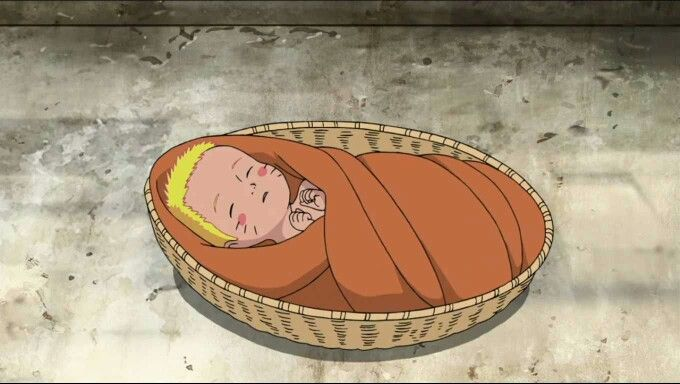
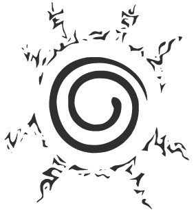
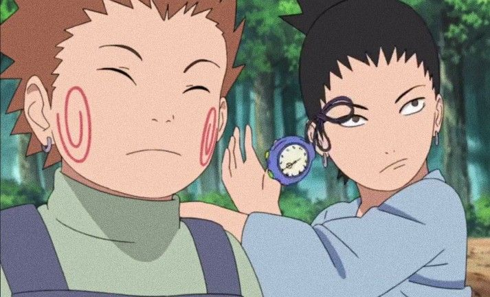

1. The beginning
2. Growing up
3. Getting better
4. Peak
5. The end

Undo the seal!
Naruto Uzumaki was born without any parents, both of them died while trying to save Naruto after an attack by the 9 Tailed Fox on the Village in the leaves. They were barely able to save him and had to seal the beast inside of their child to save the village. Because of this, Naruto grew up on his own, supervised by the third hokage, the leader of the village hidden in the leaves.
The 9 tails seal on Naruto's stomach.

the 9 tails
While growing up Naruto didn't have many friends. The beast that destroyed the village years ago was sealed inside him, which made a lot of people resent him. Parents pulled away their children from Naruto and told them not to play with him. While in the academy, Naruto spend most his time playing pranks on everyone in the village, which made them dislike him even more. Even though Naruto didn't have any real friends yet, he did hang around with Choji and Shikamaru, who were also troublemakers in class. This was a very sad time for Naruto, he didn't have any friends or other people to connect with. The loneliness made him pull pranks so he would at least get some attention. And when he got the attention he made sure to tell everyone to pay attention to him, as he was going to be the next hokage, believe it!
Choji and Shikamaru
Naruto pulling a prank